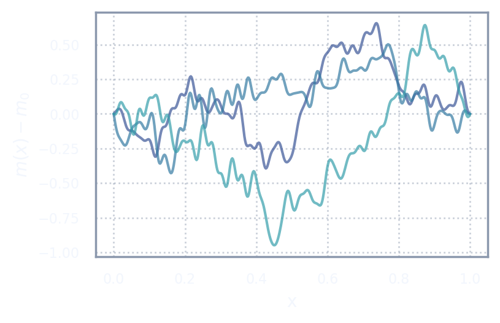
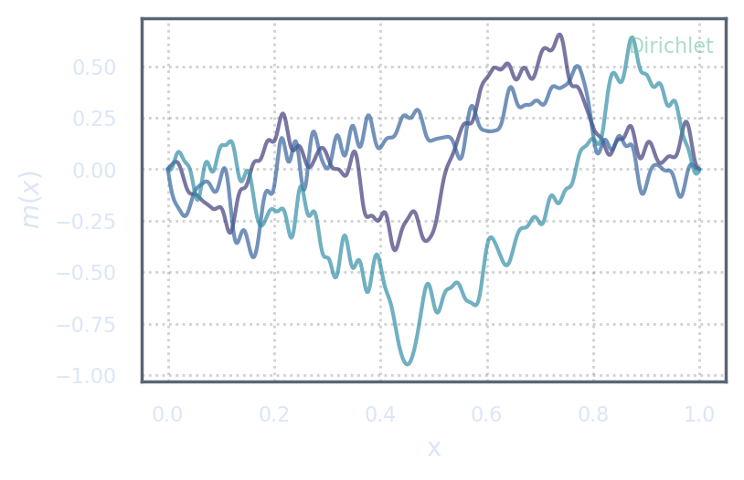

A Detour Through Measure Theory
Why probabilities are measures
We now reach the last major ingredient of the function-space Bayesian inverse problem: the prior.
In the naive discretized problem, the prior was introduced as a covariance matrix, \(\mathbf{C}_N = \sigma^2 \mathbf{I}_N\). For every fixed \(N\), this is a valid covariance matrix on \(\R^N\). But the failure of Act II showed us that this is not enough. A prior for a function space inverse problem must be a probability measure on a function space.
This forces us to step briefly into measure theory. The reason is simple: probability is not fundamentally about densities. Probability is fundamentally about assigning mass to events.
Events
Let \(X\) be a space of possible outcomes. In our setting, \(X = \M\). An event is a subset of \(X\). For example, \(A = \{m\in\M : \norm{m}_{\M}\leq 1\}\). If \(m\) is random, then we may ask for the probability \(\mathbb{P}(m\in A)\).
In function space, events can be more subtle. We might ask whether a random function has small norm, whether it is positive on a subinterval, whether its derivative is bounded in some weak sense, or whether it lies near a reference model. The prior must assign probabilities to such events.
Sigma-algebras
Not every subset of an infinite-dimensional space can be assigned a probability in a consistent way. Instead, we choose a collection of admissible events called a sigma-algebra. A sigma-algebra \(\mathcal{A}\) on a set \(X\) is a collection of subsets of \(X\) such that:
- \(X\in\mathcal{A}\);
- if \(A\in\mathcal{A}\), then \(X\setminus A\in\mathcal{A}\);
- if \(A_1,A_2,A_3,\ldots\in\mathcal{A}\), then \(\bigcup_{n=1}^{\infty} A_n \in \mathcal{A}\).
For a topological space, a common choice is the Borel sigma-algebra, generated by the open sets. If \(\M\) is a Hilbert space, we usually take its Borel sigma-algebra and define probability measures on it.
A sigma-algebra is the list of questions the probability measure agrees to answer.
Probability measures
A probability measure on \((X,\mathcal{A})\) is a map \(\mu:\mathcal{A}\to[0,1]\) such that \(\mu(X)=1\) and, for any countable collection of disjoint events, \(\mu\left(\bigcup A_n\right) = \sum \mu(A_n)\).
In Bayesian inverse problems, the prior is a probability measure \(\prior\) on the model space \(\M\). The posterior is another probability measure \(\post\) on the same space, obtained by updating the prior using the data.
Thus, at the most fundamental level, we should write \(m\sim\prior\), not \(\mathbf{u}\sim\N(0,\sigma^2 \mathbf{I}_N)\), unless \(\mathbf{u}\) is truly the unknown object and the problem is genuinely finite-dimensional.
A prior is a probability measure on possible models. A covariance matrix is only one finite-dimensional way of describing part of such a measure.
Why densities are not fundamental
In finite-dimensional probability, we often describe a distribution by a density. But a density is not a probability measure by itself. A density is always a density with respect to some reference measure.
If \(\mu\) is absolutely continuous with respect to \(\nu\), then there exists a density \(\rho\) such that \(d\mu = \rho\,d\nu\). The density \(\rho\) is the Radon-Nikodym derivative \(d\mu/d\nu\).
A density is always relative to a background measure. Without the background measure, the density is only half a sentence.
The role of Lebesgue measure in finite dimensions
In \(\R^N\), the usual background measure is Lebesgue measure. When we write \(\mathbf{u}\sim\N(\bar{\mathbf{u}},C)\), we mean that the probability measure has a density with respect to Lebesgue measure. The hidden reference measure is Lebesgue measure. It is so familiar that it becomes invisible.
Why there is no infinite-dimensional Lebesgue measure
In infinite-dimensional function spaces, there is no analogue of Lebesgue measure with the same useful properties. There is no translation-invariant, locally finite measure that plays the role of volume on an infinite-dimensional Hilbert space.
This changes everything. If there is no infinite-dimensional Lebesgue measure, then we cannot define a function-space prior by writing a density with respect to such a measure. Therefore, in function space, it is safer and more fundamental to define the prior directly as a measure: \(\prior\).
The posterior is then often defined by specifying its density relative to the prior: \[ \frac{d\post}{d\prior}(m) = \frac{1}{Z(\obs)} \exp(-\Phi(m;\obs)). \] Here the prior is the reference measure. The likelihood reweights it.
In finite dimensions, Lebesgue measure quietly carries the density formalism. In function space, that quiet support disappears.
What changes on function spaces
A prior must be a measure
In a function-space inverse problem, the prior must be a probability measure on the model space: \(\prior \in \mathcal{P}(\M)\). The prior must be defined before discretization. A discretized prior should then be an approximation of this measure, not a new probability model invented at each resolution.
This is exactly where the naive prior failed. The sequence \(\N(0,\sigma^2 \mathbf{I}_N)\) is a perfectly legal sequence of finite-dimensional Gaussian measures, but it does not define a sensible Gaussian probability measure on a Hilbert space whose covariance is \(\sigma^2 I\).
Gaussian measures on infinite-dimensional spaces
A Gaussian measure on a Hilbert space \(\M\) is a probability measure such that every continuous linear functional applied to the random model is a finite-dimensional Gaussian random variable. A Gaussian measure is characterized by its mean \(m_0\) and covariance operator \(C_0\): \(\mu = \N(m_0,C_0)\).
The covariance is characterized by \(\Cov(\ell_1(m),\ell_2(m)) = \inner{C_0 h_1}{h_2}_{\M}\), where \(\ell_j(m)=\inner{m}{h_j}_{\M}\).
In finite dimensions, almost any symmetric positive semidefinite matrix gives a Gaussian covariance. In infinite dimensions, the covariance operator must satisfy stronger conditions. Most importantly, it must be trace class if the Gaussian is to live on the Hilbert space itself.
Typical samples versus pointwise intuition
In function spaces, typical samples may be less regular than the covariance kernel or mean function suggests at first glance. A Brownian path is continuous but almost surely nowhere classically differentiable.
When choosing a prior, we should ask:
- Do typical samples belong to the intended model space?
- Do they have physically plausible roughness?
- Do they satisfy the intended boundary conditions?
- Does the prior uncertainty remain controlled under discretization?
In function space, writing down a density without specifying the underlying measure is usually smoke without a fireplace.
Gaussian Priors on Function Spaces
Mean and covariance
A Gaussian prior on the model space is written \(m \sim \N(m_0,C_0)\). The mean describes the central model before observing the data. The covariance describes the allowed uncertainty around that mean.
A useful way to think about a Gaussian prior is through a random perturbation: \(m = m_0+\xi\), where \(\xi \sim \N(0,C_0)\).
The prior mean says where the cloud is centred. The covariance operator says what shape the cloud has in function space.
Covariance as an operator
In a Hilbert space, covariance is an operator: \(C_0 : \M \to \M\). It satisfies \(\E\left[ \inner{\xi}{f}_{\M} \inner{\xi}{g}_{\M} \right] = \inner{C_0 f}{g}_{\M}\) for all \(f,g\in\M\). The variance in direction \(f\) is \(\operatorname{Var}(\inner{\xi}{f}_{\M}) = \inner{C_0 f}{f}_{\M}\).
If \(C_0\) has eigenpairs \(C_0 e_j = \lambda_j e_j\), then the prior can be represented by the Karhunen-Loeve expansion \(m = m_0 + \sum_{j=1}^{\infty} \sqrt{\lambda_j}\,\xi_j e_j\), where \(\xi_j\sim\N(0,1)\) are independent standard normal random variables. The eigenvalue \(\lambda_j\) is the variance assigned to direction \(e_j\).
Required properties
Not every linear operator is a valid covariance operator. To define a Gaussian measure on a Hilbert space, the covariance must satisfy several important properties.
Linearity: \(C_0(\alpha f+\beta g) = \alpha C_0 f+\beta C_0 g\).
Symmetry: \(\inner{C_0 f}{g}_{\M} = \inner{f}{C_0 g}_{\M}\). This is the operator version of the symmetry of a covariance matrix.
Positivity: \(\inner{C_0 f}{f}_{\M} \geq 0\). This is required because \(\inner{C_0 f}{f}_{\M} = \operatorname{Var}(\inner{\xi}{f}_{\M})\), and variances cannot be negative.
Trace class
In infinite-dimensional Hilbert spaces, positivity and symmetry are not enough. The covariance must also be trace class: \(\Tr(C_0) < \infty\). If \(C_0 e_j = \lambda_j e_j\) for an orthonormal basis, then \(\Tr(C_0) = \sum_{j=1}^{\infty}\lambda_j\). Trace class means \(\sum_{j=1}^{\infty}\lambda_j < \infty\).
This condition says that the total variance assigned by the prior is finite. The eigenvalues must decay quickly enough that the Gaussian perturbation has finite expected squared norm in the model space.
A positive symmetric operator may still fail to define a Gaussian measure on the Hilbert space if its trace is infinite.
Why trace class matters
Finite expected energy
The expected squared norm is \(\E\norm{m-m_0}_{\M}^2 = \sum_{j=1}^{\infty}\lambda_j = \Tr(C_0)\). This is the infinite-dimensional version of the finite-dimensional identity \(\E\norm{\mathbf{u}-\bar{\mathbf{u}}}_2^2 = \Tr(C)\).
The failure of the identity covariance
Consider the tempting covariance \(C_0 = \sigma^2 I\). If \(\M\) is infinite-dimensional, every eigenvalue is \(\lambda_j=\sigma^2\), and \(\Tr(\sigma^2 I) = \sum_{j=1}^{\infty}\sigma^2 = \infty\).
This means that the formal Gaussian perturbation does not have finite expected squared norm in \(\M\): \(\E\norm{\xi}_{\M}^2 = \infty\).
This is exactly the continuous analogue of the failure we saw in the naive discretization: \(\Tr(\sigma^2 \mathbf{I}_N)=\sigma^2 N\to\infty\). In finite dimensions, \(\sigma^2 \mathbf{I}_N\) is harmless for fixed \(N\). In infinite dimensions, \(\sigma^2 I\) is not a valid covariance operator for a Gaussian measure living on the Hilbert space.
A covariance operator must produce actual random functions in the chosen model space. That requirement is far stronger than being a positive matrix after discretization.
What the covariance really chooses
The covariance operator chooses more than variance. It chooses the regularity, correlation, length scale, and boundary behaviour of prior samples. If the eigenvalues decay rapidly, high-frequency modes are strongly suppressed, and samples are smoother. If the eigenvalues decay slowly, high-frequency modes retain more energy, and samples are rougher.
The covariance operator encodes statements such as:
- how large model perturbations are expected to be;
- how correlated nearby points are;
- how smooth or rough samples should be;
- what boundary behaviour samples should satisfy;
- which directions are plausible and which are unlikely.
A covariance matrix says how a finite vector wiggles. A covariance operator says how a random function breathes.

How to Build Covariances
Covariances from differential operators
The Laplacian
The Laplacian is the differential operator \(\Delta\). On an interval, \(\Delta f = f''\). The negative Laplacian, \(-\Delta\), is often positive under appropriate boundary conditions. Its eigenfunctions provide natural spatial modes: \(-\Delta e_j = \rho_j e_j\), where \(0\leq \rho_1\leq \rho_2\leq\cdots\), \(\rho_j\to\infty\).
Shifted elliptic operators
A common construction uses the shifted elliptic operator \(A = \kappa^2 I - \Delta\), where \(\kappa>0\) sets a length scale. A covariance operator can then be defined as \(C_0 = \alpha (\kappa^2 I - \Delta)^{-s}\), where \(\alpha>0\) sets the overall variance scale and \(s>0\) controls smoothness.
The covariance eigenvalues are \(\lambda_j = \alpha(\kappa^2+\rho_j)^{-s}\). As \(j\) increases, \(\rho_j\) grows, so \(\lambda_j\) decays. High-frequency modes receive less prior variance.
Bessel-type priors
Priors of the form \(C_0 = \alpha (\kappa^2 I - \Delta)^{-s}\) are often called Bessel-type priors or Matérn-type constructions. They connect the covariance operator, the smoothness of samples, and the differential geometry of the domain through the Laplacian.
In one dimension, the eigenvalues of \(-\Delta\) typically grow like \(\rho_j \sim j^2\), so \(\lambda_j \sim j^{-2s}\). The trace condition \(\sum \lambda_j < \infty\) requires \(2s > 1\), i.e., \(s > \frac{1}{2}\).
The role of boundary conditions
The operator \(-\Delta\) is not fully defined until its domain and boundary conditions are specified. These choices change the eigenfunctions and eigenvalues, and therefore change the covariance operator. This means that boundary conditions are part of the prior.
A Laplacian without boundary conditions is not yet a covariance recipe. It is only the beginning of one.

Covariances from kernels
Another common way to build covariances is through covariance functions, also called kernels. A covariance function \(k:\Omega\times\Omega\to\R\) is defined by \(k(x,x') = \Cov(m(x),m(x'))\).
A covariance kernel can define an integral operator: \((C_0 f)(x) = \int_\Omega k(x,x')\,f(x')\,dx'\). Under suitable assumptions on \(k\), it is symmetric and positive.
A kernel \(k\) is positive definite if, for every finite set of points and every vector \(\mathbf{a}\), the matrix \(K_{ij}=k(x_i,x_j)\) satisfies \(\mathbf{a}^{\top} K\mathbf{a}\geq 0\). However, a positive-definite kernel still needs to be checked against the chosen function space.
A kernel that gives valid finite-dimensional covariance matrices still needs to be checked against the chosen function space.
Operator view versus kernel view
The kernel view is useful when prior information is naturally spatial: variance at each point, correlation decay, stationarity, smoothness of the covariance function. The operator view is useful when prior information is naturally geometric or spectral: which modes to damp, boundary conditions, differential operators, finite trace.
Under suitable conditions, the kernel and operator views describe the same covariance. Spectrally, if \(C_0 e_j=\lambda_j e_j\), then the kernel may be written formally as \(k(x,x') = \sum_{j=1}^{\infty} \lambda_j e_j(x)e_j(x')\).
The correct object is a covariance operator that defines a valid prior measure on the chosen model space.
The prior covariance is a modelling object first and a computational object second.
The moral of Act VI
The naive prior failed because it treated covariance as a matrix attached to a mesh. In function space, this is the wrong starting point.
A prior must be a probability measure on the model space: \(m\sim\prior\). If the prior is Gaussian, then it is described by a mean and a covariance operator: \(\prior=\N(m_0,C_0)\). That covariance must be linear, symmetric, positive, and trace class. The trace condition is the mathematical gatekeeper that prevents the prior from assigning infinite total variance to the model.
The identity covariance failed because \(\Tr(\sigma^2 I)=\infty\) in infinite dimensions. The finite-dimensional symptom was \(\Tr(\sigma^2 \mathbf{I}_N)=\sigma^2 N\to\infty\).
To build meaningful covariances, we may use differential operators, kernels, or spectral constructions. But in every case, the covariance must define a valid Gaussian measure on the chosen model space, and it must be discretized as an approximation of that continuous object.
We now have all the pieces: model space, data space, forward map, adjoint, noise model, and prior measure. The next act puts them together and returns to the opening toy problem, where the pathologies of the naive posterior disappear once the formulation is done in the right order.